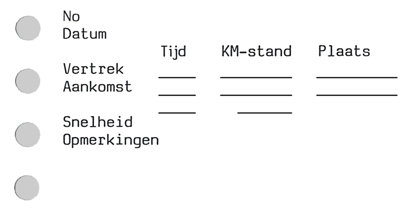

So you want to keep track of your rides and, once you’ve managed to get safely back home,
do something “useful” with the data you’ve collected? If yes, read on…
This work-in-progress page is based on the notes Prino has used since he started recording his
rides on 16 June 1980 at 7:47. The notes are pretty simple; you can obviously adapt them to
your own requirements.
A possible form to record data

Prino’s liftnote
The forms Prino uses to record his data look like this, and, properly spaced, you can put three
columns with four rows on a sheet of A4 (210x297mm) paper. Fitting three columns on a US
“Letter” size sheet (215.9x279.4mm) of paper might be possible if the column widths are
reduced. Prino saves his notes in 17-ring binders.
The key to the detail of the produced statistics is the Opmerkingen section. It’s
simply called Opmerkingen, as you are unlikely to add specific comments to all of
your rides…
For those of you who don’t want to go to the trouble of creating the forms yourselves? There are
ready-made versions available here, and on that page you can
also find some additional “technical” hitchhiking resources.
The fields
What follows is a description of the various fields on the above form. There is one field that
might seem to be missing, “Waiting Time,” but it should be obvious that it’s automagically
included as the difference between the arrival time of one ride and the departure time of the
next ride, and in those cases where something happens in between, the Opmerkingen
section comes to the rescue.
Datum (Date)
Pretty obvious.
If you use the ISO 8601
format (YYYY-MM-DD), it’s easy to extend this to rides spanning multiple days by modifying
the format to YYYY-MM-DD/DD.
Vertrek (Departure) / Aankomst (Arrival)
Again, pretty obvious.
The three columns contain the Tijd (Time), KM-stand (Odometer) and Plaats (Location) of
departure and arrival. In cases where no odometer is available or where it doesn’t work, you
can use Google Maps to determine distances.
Prino has found that it is usually accurate to the nearest kilometre.
The unnamed row below “Aankomst” contains the total time and distance of the ride.
Snelheid (Speed)
The contents of this field depends on individual preferences. Prino puts the real speed in
it, i.e. the distance divided by the actual driving time, which is the
arrival time minus the departure time minus any time recorded for stops.
Opmerkingen (Miscellaneous notes)
This is a free-format field that you can use for any purpose you like. Why free format?
Easy! It’s unlikely that you would need a specific format for all of your rides, e.g. why
include specific headings for rides that cross borders or span more than one day, when the
number of such rides is likely to be pretty small compared to “normal” rides.
Here’s a non-exhaustive list of things Prino has been using this field for:
The type of driver. (Male, female, truck, van, taxi, etc, you can obviously make it as
detailed as you like)
The nationality of the driver, Prino uses the
international license plate code,
but only records this information if the driver is not from the country where they pick him up.
Details of stops (reason: meal, rest, toilet, etc) and times. Recording these times
allows you to calculate the true driving speed!
Details (i.e. time and odometer reading) at border crossings, which allow you to create
per-country totals.
Odometer readings at midnight, which allows you to create per-calendar-day totals.
Special vehicles (or even every type/model of vehicle/car).
On the last ride of a day Prino adds a “Total distance/time/speed” entry.
There are probably lots of other things you might want to put into it.
If the Opmerkingen section is too small (and Prino has had rides with a dozen stops and
crossing five borders in two days), he usually continues on the back of the form.
Storing the data on a PC or other device
This is likely to be the most important decision you will have to make. There are (at least)
three options:
a (structured) text file, to be processed by a user-written program
a spreadsheet
a database
Each of these options has its pros and cons. Here are some details:
Text file
Prino uses the text file option with a few programs he has written himself. The advantage of
using this format is the fact that it allows him total flexibility, but it has a pretty big
disadvantage in that you have to think very carefully about the format you plan to use: it
should be able to cater for future changes without you having to completely rewrite your
programs. The format used by Prino, described later, was developed over about 28 years, and
despite the fact that he has moved to a new format after a few years, the result of not
giving the format enough thought initially, is rather cryptic due to more additions since
adopting it!
A spreadsheet
If you’re well versed in spreadsheets (or if not, try LibreOffice,
it’s free), you might want to consider using one to process your data. It will have the big
advantage that you can insert or delete columns in your source data, and the program will
automagically update the references in all other cells and/or sheets. Combined with the
many conditional functions, you should (probably) be able to produce any statistics
you like, although some of the more esoteric ones Prino’s program creates
might be pretty hard (or even impossible, but never say never) to replicate.
If you want to use Prino’s input file format as described below, but would also like to use
a spreadsheet to generate tables that lift doesn’t generate, you can
use dat2csv to generate “lift.csv”, which contains a reduced,
information about country- and day-splits, and in-ride stops is removed, subset of the data
in “lift.dat”.
A LibreOffice “Calc” spreadsheet you might use as a starting point, but which heavily relies
on the format of the input file used by Prino, is
lift & v100+.ods.
A database
What was written about spreadsheets also holds true for databases. Not having used any PC
database programs, Prino cannot recommend any, but there are plenty of free ones: LibreOffice
“Base” and MariaDB, to name just two of the
more well-known ones. Creating your statistics will mean writing queries (most likely in the
fairly easy-to-learn language SQL), but given the non-procedural nature of this language, some
results that can be created with a self-written program or a spreadsheet may be hard or even
impossible to recreate.
Prino’s original program
As mentioned above, and being a programmer by profession, Prino selected the first method of
storing the data, a text file. The first 60(!) versions of his program were written in
Turbo Pascal
(V3.01a), and until about version 20 they used “Version I” of a simple
CSV file
with the data. It could handle rides passing through multiple countries and spanning more
than one day, but did not know anything about ferry crossings, stops, or time zones, to name
but a few of the things that arrived later…
Given that the old format became obsolete a long time ago, it’s not interesting to go into
the nitty-gritty of it, but its output mimic’ed his manually created
five tables per trip, containing:
a table with the distribution of the distances per ride. Initially in intervals of
100 km, but due to the overwhelming number of rides shorter than 100 km, this
interval was soon split up into four additional intervals of 25 km, and the, as
expected, rather small number of rides over 1,000 km long are split into intervals
of 1,000 km.
a table of distances for each type of driver.
a table of distances per country.
a table with a count of the number of drivers per nationality.
a table with various maxima, minima, and averages for the rides and days of the trip, i.e.
highest/lowest/average speed per ride/day, greatest/smallest/average distance per
ride/day, longest/shortest/average time per ride/day.
Simple, uncomplicated, and one might assume that most hitchhikers would leave it at this…
Prino’s current program
The current program is written in Virtual Pascal V2.1.279 (or
PL/I, should you want to run it on IBM’s z/OS). It is licensed under the provisions of the
GPL V3. The
“authenticity” verified WinRAR archive
containing the sources and executable files can be found as
“lift32bit.rar”.
Data format used by Prino’s current program
The “simple” format was used until the end of 1994. Due to the fact that Prino wanted to add
some additional statistics to the output files, it was changed into something a bit more
logical, although some people might find otherwise. (And they are right, it’s a right-royal
mess due to more additional requirements, and Prino would like to simplify some of the more
esoteric uses of punctuation, but that’s unlikely to happen anytime soon as he has a list
of additional tables he would like to add first)
The current format, split into two parts to avoid scrolling, looks like this:
number of the ride within the trip, up to four digits
Col 13 - 15 (“Day”)
“day” of the trip, up to three digits
up to three digits for a real day
“␣␣#” to
indicate that this ride was split over two (or more) days
“nna” through “nnz” for the parts traveled through more than one country. The “a” on
the first country must be lowercase, and nn should be the day on
which the ride entered the country, which, in case of rides that are split over
multiple days, may result in “12a”, “12b”, “12c”, and “13d”, as is the case of
ride 47 of the first trip Prino made.
“!xy” to indicate the xy-th stop during this ride. “x” must be
present, but may be a blank!
Col 18 - 24 (“Distance”)
total distance for this ride, up to 99999.9 km
Col 27 - 32 (“Time”)
driving time for this ride, up to 999:59
Col 34 - 40 (“Velocity”)
the data in these columns can be either
the average velocity for this ride, i.e. “Distance” divided by “Time”
or
blank, if “Split” is non-blank
Col 43 - 45 (“Nationality”)
the nationality of the driver, up to three characters[1]
Col 48 - 51 (“Type”)
the data in these columns can be either
the “type” of the driver, up to four characters, and it’s obviously fully up to you
to define a “type”.
Prino’s 23 types of driver
- - Male (single/multiple)
-* - Male, with child(ren)
V - Female (single/multiple) (from the Dutch "Vrouw")
V* - Female, with child(ren)
T - Truck
B - Van (from the Dutch "Bestelwagen")
E - Couple (male+female) (from the Dutch "Echtpaar", married couple)
F - Family
P - Police
Bus - Bus
M - Motorbike
Taxi - Taxi
PW - Horse-drawn cart (from the Dutch "PaardenWagen")
C - Camper/mobile home
Tr - Tractor
Por - Porsche
Cab - Cabriolet (roof down!)
VT - Female truckdriver (V + T)
MB - Mini-bus
Fer - Ferrari
Elec - Fully electric car
VPor - Porsche (Female driver) (V + Por)
V-El - Fully electric car (Female driver) (V+El[ec])
Of course it would be possible to add way more “type” of driver types, Prino has
mentally reserved at least one new category, “Old”, which will come in use if he
ever gets another ride in an oldtimer, the “Lagonda LG45” from 1937 has currently
been classified as a Cabrio.
or
the type of “in-ride” wait, an exclamation (“!”) mark followed by three
characters. Free format, but at the moment all descriptions are hardcoded in
the program.
The “in-ride” waits just came into existence when they occurred, and although many
of them made sense at the time, two of them, “!V” and “!N” should probably have been
merged right from the start, and a third, “!T”, has become irrelevant since the
arrival of the electronic tachograph.
Prino’s 20 types of in-ride and ex-ride waits
!B - Border
!P - Petrol (*)
!W - Toilet (WC) (*)
!D - Drink (*)
!M - Snack (Used to be Meal) (*)
!Y - Meal (Yummy…) (*)
!R - Rest (*)
!S - Sleep
!C - Company business
!T - Toll
!L - Legal (Police)
!V - Vehicle problems
!N - No fuel
!F - Tacho fiddle
!J - Traffic Jam
!E - E-Charge (*)
!& - Smiespel (Don’t ask!)
!^t - Transit, such as the use of public transport between rides (!)
!^w - Walk, from a drop-off place to a better place to start hitching again (!)
!^x - Cross,
probably/possibly Prino specific, a reversal of direction, Prino
frequently uses them during his “hitchhiking for hitchhiking’sake”
trips (!)
Note 1: Only the “(*)” marked ones are valid for “ex-ride” waits, using
any of the others for such waits will result in those waits being classified as “Other”
Note 2: The “(!)” marked ones are (as yet unverified) only valid for “ex-ride” waits
There’s also an “Other” named type of wait that’s marked by just a “!” in the
split column.
There is one value that must be present for some
specific “in-ride” waits:
B - border crossing
If the driver does not stop at the border, the time of crossing must be recorded in
“Departure time”, and, for crossings that involve a stop,
or move into a different time zone, “Arrival”.
In case of a triple crossing, i.e. day, border, and forward-moving
time zone (e.g. PL-LT at midnight), the “B” must be followed
by a “#”[2].
To convert a wait into an “ex-ride” wait?
^ - non-hitching time between rides
At the moment, this time must be allocated as the last “in-ride”
waiting time of the previous ride, which needs to have its ending time
adjusted, i.e. if ride N ends at 12:34 and is followed by 56 minutes
during which you have a nice meal, you’d add a “!^Y” stop to
ride N, with a start-of-stop time of 12:34, an end-of-stop time of 13:30,
and adjust the end-of-ride time for ride N to 13:30.
Col 54 - 56 (“Country”)
the country for this ride, in one of the following formats:
the (up to) three-letter country abbreviation[1], when “Split” is blank,
or
an “*” if this particular ride is split over multiple countries, where the “*” must be on the first line for this ride,
or
blank, for those lines of the ride that deal with the split day data, i.e. where “Split” is “#”,
or
the (up to) three-letter country abbreviation[1], if “Type” is “!B” and “Split” is “!”
Col 59 - 63 (“Wait”)
the wait for this ride[3][4]
Col 66 (“Split”)
a “split-type” indicator[5], with the following possible values:
blank
first line for a new ride
“#”
the current line contains ride-data relating to a day split
“*”
the current line contains ride-data relating to a country split
“!”
the current line contains ride-data relating to an “in-ride” wait (See “Type”)
Col 69 - 73 (“Departure time”)
a time field that can contain one of the following times
the departure time[6] of this particular ride,
or
the starting time of an “in-ride” wait, i.e. where “Split” is “!”,
or
the time for a non-stopping border crossing[7], i.e. “Type” is “!B” and “Split” is “!”
Col 76 - 80 (“Arrival time”)
a time field that can contain one of the following times
the arrival time[8] of this particular ride,
or
the ending time of an “in-ride” wait, i.e. where “Split” is “!”,
or
the time for a stopping border crossing[7], i.e. “Type” is “!B” and “Split” is “!”
Col 83 - 92 (“Date”)
the date, in ISO 8601 format. The date
is required for the first ride of the day, and for every multiple-day line where the
“Split” is “#”, except the first,
unless the multiple-day ride is the first ride of the day.
Col 95 - 102 (“Odometer”)
the odometer at the start if this ride, up to 999999.9 km[14]
Col 105 - 106 (“Departure type”)
the type of departure or departure location. It’s a 2-character field, with the first
character encoding the type of departure, with these two keys
t - for thumbed rides
a - for asked-for rides
Prino uses lowercase, but lift will be just as happy with
uppercase.
and defaulting any other character to “Other.” Prino informally
uses i for rides where the driver invited him, or a
driver used his CB radio to get him a follow-on ride, etc, and
q for pre-arranged rides, like being dropped off at
a better starting location by family or friends.
The second, as yet unused, character might eventually be used to indicate the type
of location from where the ride was started, Prino currently uses the following keys
[2] Given that Prino has never encountered a triple crossing
with a backward moving time zone (e.g. F-GB at midnight), he doesn’t expect the program to
handle them and, as yet, has no interest to test hypothetical cases. (And don’t even think
about quadruple(!?) crossings)
[3] Prino never records the waiting time before the first
ride of the day, unless the first ride of the day happens to be one that continues directly
after the last ride of the previous day, without any intervening (sleep?) stop.
[4] The normal “.” separator in the waiting time must be
replaced by a “:” (colon) for those waits caused by the departure from a
ferry terminal where you haven’t been able to get a ride on the ferry (and may have had to
wait until the next ferry…)
[5] Multiple split lines may be present, but they must
be grouped, and the groups must be in “#”, “*”, “!” order!
[6] The normal “.” separator in the departure time must be
replaced by
a “:” (colon) for departures after a ferry crossing in order to record the ferry crossing, or
a uppercase “X” for departures from a same-named location at the other side of the road, or
an lowercase “x” for departures from a different-named location at the other side of the road.
[7] Non-stopping (i.e. drive-through) border crossings must not record
an arrival time, unless the time zone changes.
[8] The normal “.” separator in the arrival time of a time-zone-changing border crossing must be
replaced by
a “+” for a crossing in easterly direction, and
a “-” for a crossing in westerly direction.
[9] The places of departure and arrival must be UTF-8 encoded
and their length is (currently) limited to 47 bytes!
[10] Lines must not contain trailing blanks, but completely blank
lines, consisting of just a CR/LF, are allowed.
[11] Although the data is in CSV format, all positions are fixed!
[12] Lines starting with “{” in column 1 are treated
as comments or meta-data. A description of the meta-date format can be found below.
[13] Columns containing numerical data or times must be right aligned,
columns containing text must be left aligned, and if the textual data is shorter than the column width,
the separating comma may follow it without intervening blanks, except for the departure location.
[14] The “Odometer” data is (currently)
completely ignored by the main lift program.
[15] Lines longer than 255 characters are (currently) completely
ignored by the main lift program.
Metadata
As Prino didn’t want to make the format of the data even more complex than it already is, he
decided to allow for comments and meta-data to be embedded into the input file. Both comments
and meta-data start with a “{” and can be up to 255 characters long.
The (currently) defined, but only partly used types of meta-data are:
Col 1
“{”, the start-of-comment/meta-data indicator
Col 2…
the following characters, in the order they came into
existence, indicate whether the line contains meta-data or is simply a
comment:
“ascii” - only required if the input file is transferred/translated for use on z/OS using EBCDIC encoding
any other character - the line is treated as a comment, and ignored
Time zone information
The meta-data contained in lines starting with “{Z-” or “{Z+”
provides information about the time zones for the countries passed in a trip. The difference
between the two variants is that time zone information following a “{Z-”
completely replaces the current set of countries/time zone pairs, whereas “{Z+”
will add additional countries/time zone data pairs or replace existing ones. The option can be
used in multi-zonal countries, or in trips that span the change from winter- into summer-time,
or the reverse.
Up to 31 country/time zone data pairs immediately follow the “{Zx” and
consist of eight characters,
a three-character country code (See [1] above),
a single blank, or
a three-character offset from UTC for the country, from
-12 to +14. The
offset must be in the format “+nnX” or “-nnX”, where the “X” can be “ ”, and, theoretically, as this
functionality has not yet been implemented, “a”, “b”, or “c”, indicating an additional offset of 15,
30, or 45 minutes.
Assuming that the partial hour functionality will at some stage be implemented, the time zone information
for a theoretical trip through the Netherlands, Nepal, and Newfoundland would be encoded as
{Z-NL +01 NEP +05cCDN -03b
Note that if a trip spans more than 31 countries, time zone data for additional countries can be added via
“{Z+” meta-data.
Partner data
The meta-data contained in lines starting with “{<” and “{>” provides a
means of embedding data from (a) hitchhiking partner(s) in your own data, provided the partner data is an
exact subset of your own data.
The “<” character must be followed by ␣tttt␣rrrr␣dddd␣-␣name-of-partner where
␣
indicates a single blank character
tttt
is the value that will be subtracted from “Trip” to give the actual trip number for the partner
rrrr
is the value that will be subtracted from “Ride” to give the actual ride number for the partner
dddd
is the value that will be subtracted from “Day” to give the actual day number for the partner
name-of-partner
will be used by the get-aud program when data for a
specific partner needs to be extracted
The “>” character must be followed by ␣-␣name-of-partner
to indicate the end of the embedded data.
Interruption information
The meta-data contained in lines starting with “{I” provides a means of embedding information for use in
h-h2html, such as non-hitching breaks, or even additional html!
The use of the “I” character is further explained in the
notes following the description of that program.
Google short URL
The “H” character is currently not used by any programs. It is followed
by the trip, ride, Google Maps short URL, departure and arrival locations, and the distance between
them returned by Google Maps. In data for more recent rides, the full Google Maps URL is also included to
prevent loss of data should Google become even more evil in the future, Nearly all of the original
five-character short URLs, many of them encoding non-trivial deviations of the routes followed, in
“lift.dat” are no longer working!
Due to the fact that the routes may contain privileged information, “{H” tags are no longer
included in the archived copy of “lift.dat” that Prino makes available here.
Click here for the current format, which may be subject to change!
In the following ␣ indicates a single blank.
Col 1 - 3 (“ID”)
“{H␣”
Col 4 - 11 (“Trip/Ride”)
the trip and ride this URL meta-data belongs to, in the format “ttt.rr:␣”, where
both “ttt” (the trip) and “rr” (the ride), separated by a “.”, have leading zeros.
the departure location, left aligned in a field with a length of 47 bytes,
followed by a single “␣”, for the above short URL it would be
“Raststätte Lappwald Nord......................␣”
on Autobahn A2 in Germany.
And note that you will count only 46 characters before the “␣”, the “missing”
one is caused by the fact that the “ä” is encoded in two bytes using UTF-8, if
you would look at the data in raw (byte) format in a hex-editor like
HxD, they might show
up as
“ä” (“ANSI”)
“├ñ” (“DOS/IBM-ASCII”)
“√§” (“Macintosh”)
Col 98 - 145
the arrival location, left aligned in a field with a length of 47 bytes,
followed by a single “␣”, for the above short URL it would be
“Raststätte Rhynern Nord.......................␣”
on Autobahn A2 in Germany.
Col 146 - 156
the length of the route followed, in the format “dddd.d␣km␣␣”,
where leading zeros may be replaced by blanks, for the above short URL it would
be “␣270␣␣␣km␣␣”.
The “U” character is currently not used by any programs. It will (at some point in the future) be used to allow the use of
UTF-8-encoded locations that exceed the current 47-byte limit.
The meta-data contained in lines starting with “{V” provides a means of embedding
offsets that are required to normalise the ride and day number for processing by
lift, as the program cannot
natively handle trips that start with a ride or day other than 1 and 1.
This meta-data should not be entered manually; it will automagically be added by
datsplit, the program
that is used to split the input file for lift into separate files per
trip and per year.
The “V” character must be followed by ␣rrrr␣dddd where
␣
indicates a single blank character
rrrr
is the value that will be subtracted from “Ride” to give the internal-use-only ride number for this trip
dddd
is the value that will be subtracted from “Day” to give the internal-use-only day number for this trip
For Prino’s eyes-only information
The meta-data contained in lines starting with “{^” allows Prino to add personal
notes to some of his rides, such as names and (email) addresses of his drivers. A simple invocation
of “sed” with a command line of
-i “/^{\^.*$/d” input file
will quietly remove these lines from the file that is publicly accessible. Which means you will never see such lines!
z/OS using EBCDIC
The lowercase“ascii”string
metadata is only required if the input file is transferred to z/OS, which uses
EBCDIC rather than
ASCII/UTF-8, and the resulting output needs to be transferred back,
via the same procedure, to the original ASCII/UTF-8 based system.
The explanation for the above is rather technical, but it boils down to the fact that there
are at least three ways:
the Work Station Agent (an IBM tool supplied with ISPF, the z/OS “IDE”),
of transferring data between the ASCII/UTF-8 realm and z/OS. All three allow lossless transfers
from and to z/OS, but all use (in many cases) different translate tables for ASCII control
characters (0x00..0x1F) and characters between 0x80..0xFF
(many of which are used to encode UTF-8 characters). Using the ASCII metadata allows programs written in
PL/I (and COBOL) to detect UTF-8 characters no matter which transfer procedure is used. Feel free to
email me
if you want a full explanation.
The results of Prino’s current programs
The current programs produce rather a lot more output than the five tables per trip! In fact,
the main program now produces eight files and an optional additional post-processor program that
translates the output into .RTF format creates two additional files with two tables sorted in
various other orders. The programs and files, assuming their default names, they produce are:
The main program, lift
Disclaimer: Much of the code in lift was written
before Prino implemented support for time zones, and even now he does not record
the odometer reading at the “correct” midnight for those rides that span multiple days!
As a consequence, the following tables might contain erroneous or misleading data:
the “totals per day” table in the “per trip” section of “lift.h-h”.
These tables theoretically contain days that go from midnight, 0:00, to midnight, 24:00, but
have a length exceeding 24 hours. However, in these particular tables, the zone column
will correct any discrepancy in the summation of the other columns.
All tables that reuse per-day data in any way. All of them are marked below with a
“See disclaimer” note.
For the moment, and that moment may well last forever, Prino has given up finding a solution
for this problem other than forgetting about time zones, and using a clock set to UTC…
lift produces eight files, described in
the following sections.
“summ.h-h” - A general summary
This file contains more than 100 tables, some of them broken into several parts because
they would otherwise require A3 or A2 size paper. (The total below doesn’t count
individual tables of sets) Here’s the full list:
two tables of totals for every trip
per individual trip
as a running cumulative total
a table of totals for all distances
a table of totals for all types
a table of totals for all countries
a table of totals for all nationalities
a table of totals for all speeds
(up to) five tables of totals for all waits
waits split up into waiting time intervals
a statistical analysis of waiting times
short and long rides following waits
in-ride waits split up into reason per wait (*)
ex-ride waits, in essence, non-hitching time between rides, split up into reason per “wait” (*)
two tables of ferry-related waits (*)
waits after ferry crossings
time spent on ferries
three tables of pick-ups
per nationality per country
per country per type
per nationality per type
a table with the distribution of hourly departure times per weekday
a table with the first and last ride for all distances
a table with the first and last ride for all types
a table with the first and last ride for all countries
a table with the first and last ride for all nationalities
a table with the first and last ride for all speeds
two tables of waits per trip, split into short and long waits
per individual trip
as a running cumulative total
a table of waits per country, split into short and long waits
a table of waits before departure times (also s & l split)
a table of waits per weekday (also s & l split)
a table of waits per month (also s & l split)
a table of waits per year (also s & l split)
a max/min/average summary for all rides
a max/min/average summary for all days (See disclaimer)
a max/min/average summary for all types
a max/min/average summary for all nationalities
a max/min/average summary for all countries
a table of rides per country, split into internal and border crossing rides
a table of rides per country, split into native and “foreign” drivers
two tables of longest (km/#r) consecutive distance per country
the longest run of consecutive rides inside a country
the longest run of consecutive rides outside a country
four tables for the max/min speed & max/min rides for a given number of distances
four tables for the max/min speed & max/min distance for a given number of rides
four tables for the maximum number of rides
exceeding a number of selected velocities, maximised for the number of
rides and the distance,
one set of two tables for absolute speed
one set of two tables for average speed
four tables for the maximum number of rides
exceeding a number of selected lengths, maximised for the number of
rides and the distance,
one set of two tables for absolute distance
one set of two tables for average distance
a max/min/average summary for all weekdays (See disclaimer)
a max/min/average summary for all months (See disclaimer)
a max/min/average summary for all rides per year
a max/min/average summary for all days per year
a table of the distribution of distances per day (See disclaimer)
a table of the distribution of speeds per day (See disclaimer)
a table with the first and last day for all distances (See disclaimer)
a table with the first and last day for all speeds (See disclaimer)
four tables for the max/min speed & max/min days for a given number of distances (See disclaimer)
four tables for the max/min speed & max/min distance for a given number of days (See disclaimer)
four tables for the maximum number of days
exceeding a number of selected velocities, maximised for the number of
days and the distance,
one set of two tables for absolute speed (See disclaimer)
one set of two tables for average speed (See disclaimer)
four tables for the maximum number of days
exceeding a number of selected lengths, maximised for the number of days
and the distance,
one set of two tables for absolute distance (See disclaimer)
one set of two tables for average distance (See disclaimer)
a table of the distribution of distances per trip
a table of the distribution of velocities per trip
four tables for the max/min speed & max/min trips for a given number of distances
four tables for the max/min speed & max/min distance for a given number of trips
four tables for the maximum number of trips
exceeding a number of selected velocities, maximised for the number of
trips and the distance,
one set of two tables for absolute speed
one set of two tables for average speed
four tables for the maximum number of trips
exceeding a number of selected lengths, maximised for the number of
trips and the distance,
a table of totals for consecutive days (See disclaimer)
two tables of totals for 24-hour periods
maximum distance per 24-hour period per year
consecutive longer 24-hour period distances
a table of totals for 365 (or 366, if the period contains 29 February) day periods (See disclaimer)
a table of the minimum number of rides needed for selected numbers of nationalities
two tables (trip/year) with the number of calendar days, types, countries, and nationalities
of drivers met during the trip/year, split into total and “new”
four tables (two per type, two per nationality) with
the longest run of consecutive rides for a single type or nationality
the longest run of consecutive rides without a type or nationality
a table of pickup times per 6-hour interval per country
two (ride + day) sets of three tables with 10% information about rides/days, distances, and times
a table of DTV (+ L=) per type (“Thumb”, “Ask”, or “Other”) of pickup
a table of waits per type of pickup, split into short and long waits
six tables (three per country and year) for each type of pickup, split into internal and external rides
a table with indicators which countries have been hitched-in or hitched-through and with locals or foreigners
three tables showing the progressive maxima for distance, time, and velocity
four tables (two for foreigners, two for natives) showing the progressive longer numbers and distances covered by both
two tables (per type & nationality) for the longest non-stop ride and the distribution of the number of stops
a table of progressively longer distances per calendar day
a table showing the distribution of the number of borders crossed for rides starting in a given country
a table showing the longest (distance-wise) and fastest rides crossing a set number of borders
“lift.h-h” - Detailed summaries per trip, type, country, nationality, and year
This file contains detailed summaries per trip, type (of driver/vehicle), country, nationality
(of driver), and year. It contains a section for each of these entities, split by
“Totals per type/country/nationality/year” separator pages.
The “per trip” section
The “per trip” section contains four pages per trip:
a max/min/average summary for all rides and days (See disclaimer)
Page 2
a table of totals for all waits
a table of the statistical waiting time distribution
a table of all in-ride waits per category (*)
a table of all ex-ride waits per category (*)
a table of waits per country, split in short and long waits
a table of successively longer distances per 24-hours
Page 3
three tables of pick-ups
per nationality per country
per country per type
per nationality per type
Page 4
a max/min/average summary for all types
a max/min/average summary for all nationalities
a max/min/average summary for all countries
two tables detailing distances per country
a table listing the (partial) country distances in the order they were passed
a table that just summarises the distance per country
The “per type” section
The “per type” section (currently) contains two pages per type (of driver/vehicle), containing
the following seven tables:
Page 1
a table of totals for all distances
a table of totals for all countries
a table of totals for all nationalities
a table of totals for all speeds
Page 2
a table with the distribution of hourly departure times per weekday
a table of progressively longer rides for this type
a table of progressively faster rides for this type
a table of progressively longer non-stop rides
a table of DTV (+ L=) per type (“Thumb”, “Ask”, or “Other”) of pickup
a max/min/average summary for the type
Note that the “per type” section individual per-type pages do not contain a totals-per-type
table, as it would contain just a single line with the totals for that particular type. Instead
the type is merged into the heading of the totals-for-all-distances table.
The “per country” section
The “per country” section (currently) contains one page per country travelled in, containing
the following five tables:
Page 1
a table of totals for all waits
a table of the statistical waiting time distribution
a table with the distribution of departure times
Page 2
a table of DTV (+ L=) per type (“Thumb”, “Ask”, or “Other”) of pickup
a table of waits per type of pickup, split in short and long waits
a table of progressively longer distances per calendar day for this country
a table with the longest/fastest rides starting in this country and crossing successively more borders
a max/min/average summary for the country, containing two
rows, one for the non-border-crossing rides, and one for the
border-crossing rides
Note that this section does not include a totals-per-country table. Like in the “per type”
section, the country is merged into the heading of the first table on the page.
The “per nationality” section
The “per nationality” section (currently) contains one page per nationality of driver, containing
the following seven tables:
Page 1
a table of totals for all distances
a table of totals for all types
a table of totals for all countries
a table of totals for all speeds
a table of progressively longer rides for this nationality
a table of progressively faster rides for this nationality
a table of progressively longer non-stop rides
a max/min/average summary for the nationality
Note that the “per nationality” section individual per-nationality pages do not contain a totals-per-nationality
table. It follows the format of the two previously described sections, and merges the nationality
into the heading of the first table on the page.
The “per year” section
The “per year” section (currently) contains six pages per year, containing
the following tables:
Page 1
a table of totals for all distances
a table of totals for all types
a table of totals for all countries
a table of totals for all nationalities
a table of totals for all speeds
a max/min/average summary for all rides and days (See disclaimer)
Page 2
a table of totals for all waits
a table of the statistical waiting time distribution
a table of all in-ride waits per category (*)
a table of waits per country, split into short and long waits
Page 3
three tables of pick-ups
per nationality per country
per country per type
per nationality per type
Page 4
a max/min/average summary for all types
a max/min/average summary for all nationalities
a max/min/average summary for all countries
a table that summarises the distance per country, split into non-border-crossing and border-crossing rides
Page 5
a table with the longest consecutive distance inside each country visited in the year
a table with all per-country segments for the whole year
Page 6
a table of totals for all distances per day (See disclaimer)
a table of totals for all speeds per day (See disclaimer)
a table with the total period in days hitched during the year
Like in all previous sections, the year is merged into the heading of the first table on page 1 of each “per-year” page.
Additional notes regarding the “lift.h-h” file
Tables marked with “(*)” above may not always be present.
On some occasions logical pages may overflow onto a second physical page. lift
and h-h2rtf are not yet capable of detecting this problem.
“days.h-h” - Per day summary
This file contains a single table with a line for every calendar day of every trip, detailing
the number of the trip
the day in the trip
the distance hitched during the day (See disclaimer)
the (actual) driving time during the day (See disclaimer)
the average velocity for the day
the date
A follow-up program, dayform, will process this file, putting the
original single-column data into four columns of 70 rows. It also sorts the file into three
additional orders, Distance, Time and Velocity. If the data is required to be in .RTF format,
this program is required.
“trip.h-h” - Formatted input data
This file contains the input data in a neat table, omitting the odometer, place of
departure, and arrival columns. lift will paginate trips that do
not fit on a single sheet of A4 paper.
“week.h-h” - Weekday per year summary
This file always contains the following two tables:
a table with the number of times and distance/time/velocity hitched on every weekday (Mon
to Sun) for every year, and
a table of pickups and distance/time/velocity per weekday per day of the month (+ totals).
However, if the input file contains more than 1,000 rides, the second table is split out into
an additional 12 tables, one per month, replacing the pickups by the number of days hitched.
“mnth.h-h” - Month per year summaries
This file contains five tables with monthly data:
a table containing days hitched and distance per month per year, (See disclaimer)
a table cumulating the results of the previous table, giving a running total per year, (See disclaimer)
a table detailing the total distance per calendar day per month, (See disclaimer)
a table detailing the first use (or not) of all 366 calendar days, and
a table simply containing a list of days hitched, distances, time and velocities for every month. (See disclaimer)
five tables of cumulative data per month tables, sorted, except for the first, descending on
the day of the month, 1..29/30/31
total days hitched for the day of the month
total distance for the day of the month
total time for the day of the month
average velocity for the day of the month
Like the first table in “week.h-h”, the first four tables in this file do not contain time or velocity data.
A follow-up program, mnthform, will process this file, merging the first
four originally split-in-half tables, and putting the original single column data of the fifth into
four columns of (up to) 70 rows and sorts this table into four additional orders, Days, Distance,
Time and Velocity. It also produces five additional pages with per calendar month tables sorted in
days, distance, time, verlocity, and average distance per day per month. If the data is required
to be in .RTF format, this program is required.
“ntop.h-h” - Top-N tables
This file contains sets of three Top-N tables:
three top-50 tables for all rides (for distance, time, and velocity)
three top-10 tables for each trip, type, country, nationality, and year (ditto)
In those cases where there are less than 10 rides in a trip, for a type, in a country,
for a nationality, or in a year, the Top-10 may actually reduce to, in some cases, a Top-1,
which is then repeated three times for distance, time, and velocity…
“xtra.h-h” - stuff
This file contains six tables that should really be in “summ.h-h”, but due to the
fact that they are in landscape format, with lines much longer than the self-imposed
121-character line length limit of that file, they are in this file.
The first two tables in this file record “milestones”:
a table containing the details of the ride where Prino reached a “milestone” in number of rides
a table containing the details of the ride where Prino reached a “milestone” in the hitched distance
The next three tables contain all sets of “n” rides where
each ride in the set of “n” is longer than the previous one
each ride in the set of “n” is faster than the previous one
each ride in the set of “n” is longer and faster than the previous one
The final table contains a list of all progressively longer non-stop rides
An optional program, newlift
The set of programs contains an optional program, newlift, which can be used to
remove all data that does not relate to the current trip from
“lift.h-h”, leaving only
four pages for the current trip,
a “Totals per type” separator page, followed by two pages for every type that appeared in the current trip,
a “Totals per country” separator page, followed by one page for every country that appeared in the current trip,
a “Totals per nationality” separator page, followed by one page for every nationality that appeared in the current trip, and
a “Totals per year” separator page, followed by six pages per year for the year(s) of the current trip.
“ntop.h-h”, leaving only
the three Top-50 tables (if any of them contains any reference to the current trip),
a “Top-10 per trip” separator page, followed by the Top-10 table for the current trip
a “Top-10 per type” separator page, followed by one page for every type that appeared in the current trip,
a “Top-10 per country” separator page, followed by one page for every country that appeared in the current trip,
a “Top-10 per nationality” separator page, followed by one page for every nationality that appeared in the current trip, and
a “Top-10 per year” separator page, followed by one page for every year that contained rides of the current trip.
Note: The “Top-10 per …” pages are always present in the output file, but the sections themselves may be
empty if the current trip does not contain any rides that end up in any of the Top-10 tables.
“trip.h-h”, leaving only
the page(s) containing the formatted output of the current trip.
which is kinder to trees if you insist on also keeping the results on paper.
Two more, somewhat less optional, programs, dayform and mnthform
dayform is a post-processor for lift. It takes in
“days.h-h”, and spits it out in a multi-column (4x70) format. It also sorts the input file
into three additional (distance, time, and velocity) orders and outputs those in the same
multi-column format.
mnthform is another post-processor for lift. It takes in
“mnth.h-h”, merges the first four per-six-months tables, and converts the single column per-month data into
a multi-columnar (4x10n, n=1..7) format, creating a set of 15 tables—the cumulative data per month tables are
not changed
Months in Year order,
Months in Days order,
Months in Distance order,
Months in Time order,
Months in Velocity order,
Months in Days per month order,
Months in Distance per month order,
Months in Time per month order,
Months in Velocity per month order,
Months in Average distance per day per month order,
Cumulative distance for the day of the month, 1..29/30/31,
Cumulative total days hitched for the day of the month,
Cumlative total distance for the day of the month,
Cumulative total time for the day of the month, and
Cumulative average velocity for the day of the month.
Note that newlift actually modifies the “lift.h-h”, “ntop.h-h”, and “trip.h-h” files,
whereas dayform and mnthform will spit out the result of
processing “days.h-h” and “mnth.h-h” into new files, “days.h-c” and “mnth.h-c”.
Last updated on 25 September 2024 (Correct order of tables for “summ.h-h”)